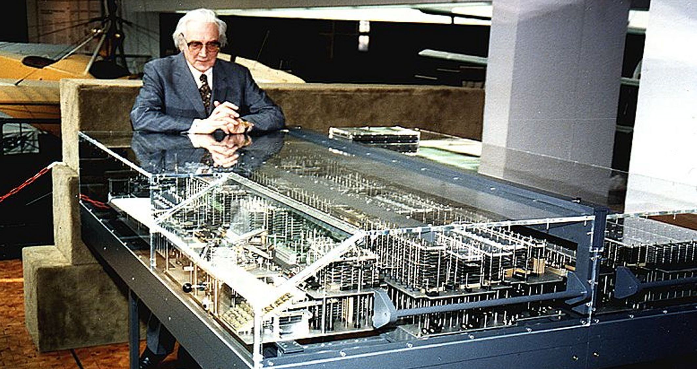

Where the world learns infinite possibilities
| Science Technology Engineering Maths Where the world learns infinite possibilities |
| Home | About Us | Contact Us | Gallery | Facts | Users |
|---|
| Facts that Will Blow Your mind |
6. If Betelgeuse would explode transiting from the red super giant stage to supernova then our sky would light continuously for two months. It can happen anytime, within a couple of thousand years, tomorrow or even now |
7. An individual blood cell takes about 60 seconds to make a complete circuit of the body |
 |
15. The world’s first computer which was named the Z1, was invented by Konrad Zuse in 1936. His next invention, the Z2 was finished in 1939 and was the first fully functioning electro-mechanical computer. |
|  |
16. Google uses an estimated 15 billion kWh of electricity per year, more than most countries. However, Google generates a lot of their own power with their solar panels. |
17. If you was to have your picture taken by the very first camera, you’d need to sit still for 8 hours. |
| Prev |
|---|